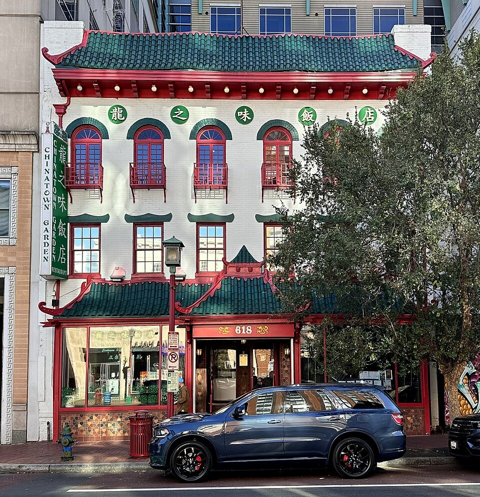

Prepared by The Lion’s Path · November 2026
Chinatown Garden, 618 H St facade (Apr 2026). Photo: APK, CC BY 4.0, Wikimedia Commons
Current as of November 26, 2026Start at 7th and H Streets NW, under the Friendship Archway: seven pagoda-style roofs, some 7,000 glazed tiles and 272 painted dragons, paid for jointly by Washington and its sister city, Beijing, and dedicated in 1986. The Gallery Place–Chinatown Metro is steps away, and Capital One Arena sits just to the south. Few neighborhoods in the city are easier to reach, or easier to misread.
This is DC's second Chinatown. The first grew up in the 1880s along Pennsylvania Avenue, until the Federal Triangle swallowed it. In 1931 the On Leong merchants' association bought buildings on H Street between 6th and 7th, its rival Hip Sing followed, and a new Chinatown of family associations, shops and restaurants took root. Then came the long unwinding: families left for the suburbs after the 1968 riots; the old convention center displaced more residents in the early 1980s, and the city built Wah Luck House at 6th and H in 1982 to rehouse them; the arena opened in 1997, and national chains followed. Roughly 3,000 Chinese residents lived here in 1970. By 2015, about 300 remained.
What's left is a neighborhood of contradictions. City design rules require businesses here to show their names in Chinese characters, which is how a burger chain ended up under a sign reading “Best Burger in the World.” The old guard endures anyway: Cantonese dining rooms that have outlasted decades of redevelopment, and a Lunar New Year parade whose lion and dragon dances still fill 8th Street each winter.
So eat here with intent. Skip the chains you can find in any city and come for noodles pulled by hand in a 6th Street window, roast duck noodle soup, soup dumplings, Cantonese plates after midnight. The places in this guide are where the neighborhood's story is still being cooked.
Chinatown here means the DC Office of Planning's Chinatown Design Review area, bounded by Mount Vernon Square, Massachusetts Avenue, 5th Street, G Street and 8th Street NW. In practice that is G St to K St / Mass Ave, and 5th to 8th St NW, centered on the Friendship Archway at 7th and H. All places are inside it except the featured Lucky Danger (709 D St NW), about three blocks south of the G Street edge.
Walk times in each entry are from the Convention Center, 801 Mount Vernon Place NW (the south side, at Mount Vernon Square), at 3 mph. Information is current as of November 26, 2026.
Loading map…
Tap a numbered pin to see the place. Numbers match the entries in the guide. Places that share a building (Daikaya and its Izakaya) sit side by side; the dark pill marked 11–16 is Luna Hall, whose six stalls share one address. Lucky Danger (1) is at 7th and D St, three blocks south of the boundary. Mount Vernon Square, at the top of the map, is the south side of the Convention Center. Dashed outline: Chinatown Design Review boundary. Walking times: 3 mph from 801 Mount Vernon Place NW.
Street lines and landmarks © OpenStreetMap contributors.
Honoring our Chinese heritage. Welcoming the broader Asian community.
The Lion's Path is a community-driven effort to strengthen local connections, celebrate Chinatown's cultural heritage, and support small businesses. We work alongside residents, businesses, and partners to keep Chinatown a living neighborhood.
Building local relationships. Connecting community members and partners around Chinatown's future.
Celebrating culture. Bringing people here through food, art, and cultural programming that supports local businesses.
Investing in welcoming spaces. The alleyway project connecting H and I Streets is the subject of substantial proposed public investment. The Painted Lions Project envisions a heritage walk linking community stories and local businesses through painted guardian lion statues.
We'd love to hear from funders, businesses, artists, community organizations, and anyone with time, skills, ideas, or connections to offer. Know someone who could help? Please connect us.
This guide is meant for people coming to DC's Chinatown, including guests of events at the Walter E. Washington Convention Center, a short walk north of the Friendship Archway.
No restaurant in this guide has agreed to be included, to work with The Lion's Path, or to offer visitors anything. Inclusion is editorial. Nothing on this site should be read as a partnership, sponsorship, or joint promotion.
Information is current as of November 26, 2026. Hours, phone numbers and stall lineups change; check with each place before you go. Walk times are estimates on the downtown street grid from the south side of the Convention Center (801 Mount Vernon Place NW) at 3 mph, not live walking directions.
No stock or AI-generated images are used. Places without a cleared photograph are shown as text only.

.jpg){kind=link}